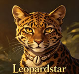

What Makes RiverClan Warrior Cats Special
Anyone who's read the Warrior Cats books knows RiverClan cats aren't your average forest cats. These guys live by the water, and you can tell just by looking at them. Their pelts stay sleek and glossy year-round. Their camp sits on an island surrounded by reeds. And if you ever try chasing a RiverClan cat into the river, well, good luck with that - they'll swim circles around you before you even get your paws wet.
But there's more to this clan than just being good swimmers. RiverClan has produced some of the most unforgettable characters in the entire Warrior Cats series. Crookedstar's tragic life story still hits fans hard every time they reread it. Feathertail's sacrifice in the mountains remains one of the most heartbreaking moments across all the Warrior Cats books. When you trace the full storyline from start to finish, these cats keep showing up right where everything matters most.
Meet the Legendary RiverClan Warrior Cats
These cats have given us some of the best characters in the whole series. From leaders who had to make impossible calls to warriors who gave everything for what they believed in, these cats left their mark on the forest. Take a look at the warriors below and click through to learn more about each one.




RiverClan Warrior Cats - Character Deep Dives
🌊 Crookedstar - The Leader Who Lost Everything
Stormkit never asked for his jaw to get broken. He was just a regular kit playing by the river when the accident happened, and everything changed after that. His own mother, Rainflower, looked at him differently. She even gave him a new name - Crookedkit - like the injury was the only thing worth remembering about him. Most cats would've crumbled under that. Crookedstar didn't.
He trained harder than anyone. He proved himself in battle. And eventually he became one of the longest-serving leaders RiverClan Warrior Cats have ever had. What really gets fans though is his super edition, "Crookedstar's Promise." That book lays out everything - Willowbreeze dying, his kits getting taken from him, Mapleshade whispering in his ear the whole time. Western fans consistently vote him as their favorite RiverClan leader, and honestly? It makes total sense. The guy kept going when everything around him fell apart. That's not just leadership - that's something else entirely. Read Crookedstar's full story
🐆 Leopardstar - Pride, Power, and Controversy
Leopardstar divides people, and that's kind of the point. As Mudfur's daughter, she came into leadership with strong opinions and an even stronger sense of what this clan deserved. Then she made the call to team up with Tigerstar's ShadowClan, forming TigerClan. A lot of cats - and a lot of readers - never forgave her for that.
But here's the thing: she genuinely thought she was doing right by her clan. She wasn't just power-hungry. She was scared, and she made a bad call under pressure. Her biography "Leopardstar's Honor" goes deep into all of this, showing the stuff fans don't usually get to see. Overseas communities still argue about her regularly, which tells you something. A boring leader doesn't generate that kind of heat years after the books came out. Explore Leopardstar's complex legacy
Mistystar - The Leader Who Just Kept Going
Mistykit's start in life was complicated from day one. Her father was Oakheart of RiverClan. Her mother was Bluestar of ThunderClan. That kind of half-Clan background could've destroyed her, but RiverClan Warrior Cats took her in and she repaid them a hundred times over.
She served as deputy under Leopardstar before taking over leadership herself, and then she just... stayed. Through famine, through war, through every disaster the forest threw at her clan. Her mixed blood actually helped - she understood what it meant to belong to two worlds at once, and that empathy made her a better leader for every cat under her command. Fans consistently put her near the top of their favorite leaders lists, and her presence across so many books has made her one of the most recognizable faces in the whole Warrior Cats series. Discover Mistystar's enduring legacy
🪶 Feathertail - The Sacrifice Nobody Saw Coming
Feathertail had Silverstream's silver-gray pelt and Graystripe's stubborn refusal to quit. When she set out for the sun-drown place with Brambleclaw, Squirrelpaw, Crowpaw, Tawnypelt, and her brother Stormfur, everyone figured they'd all make it back eventually. Nobody was counting on Sharptooth.
Her leap onto that stalactite - killing the mountain lion, saving the Tribe of Rushing Water, ending her own life in the process - fulfilled the prophecy and broke about a million readers' hearts. Crowfeather never really got over it. The rest of the series kept circling back to what she gave up. if you want to talk about cats who define what heroism actually looks like, Feathertail's name comes up first every single time. Read Feathertail's tragic story
🌙 Silverstream - Love That Broke Every Rule
Silverstream didn't set out to fall for a ThunderClan cat. It just happened. One minute she was a regular silver-gray long-haired she-cat doing her RiverClan Warrior Cats duties, the next she was meeting Graystripe in secret and hoping nobody would catch them.
Their forbidden romance gave the world Feathertail and Stormfur. It also cost Silverstream her life when she died giving birth. Graystripe mourned her for seasons afterward, and her kits carried the weight of that loss their whole lives. Her story hits different because it feels so human - she wasn't trying to betray anyone, she just loved the wrong cat at the wrong time. That's the kind of emotional depth that keeps readers thinking about these stories long after they close the book. Explore Silverstream's love story
🗿 Stonefur - The Deputy Who Wouldn't Back Down
Stonefur had earned his place. Deputy under Leopardstar, brother to Mistystar, respected by pretty much everyone who knew him. Then Tigerstar decided half-Clan cats needed to die, and Stonefur got put on the list.
They told him to kill Featherpaw and Stormpaw to prove his loyalty. Instead he stood there and refused. Blackfoot and Darkstripe killed him for it. That moment - choosing to die protecting apprentices who couldn't protect themselves - is still one of the most gut-wrenching scenes in the entire Warrior Cats series. Overseas fans put him on "most tragic character" lists constantly, and his sacrifice remains a defining moment for what RiverClan stands for when everything goes wrong. Read Stonefur's heroic sacrifice
🦅 Hawkfrost - Too Much Like His Father
Sasha gave him independence. Tigerstar gave him ambition. Put those together and you get one of the most dangerous villains this clan ever produced. The Dark Forest training just polished what was already there.
His rivalry with Brambleclaw drives huge chunks of the "New Prophecy" and "Power of Three" storylines. Unlike some villains who are evil because the plot needs them to be, Hawkfrost actually believed he was making the clans stronger. He was wrong, obviously, but that conviction made him terrifying. Brambleclaw killing him was the only way that story could end, and even then it left scars on everyone involved. Explore Hawkfrost's dark ambition
🦋 Mothwing - The Medicine Cat Who Didn't Believe
Every medicine cat in the series talks to StarClan. That's just how it works. Except Mothwing doesn't. She never has. She probably never will.
That skepticism makes her one of the most unique characters across all of RiverClan Warrior Cats history. She's genuinely good at healing - nobody questions her skills - but the spiritual side? She thinks it's all stories for kits. Western fans absolutely love her for this. In a world where every other cat accepts StarClan without question, having one medicine cat who looks at the evidence and says "nope" creates a tension that never really gets resolved. She's proof that you can serve your clan without believing what they believe, and that's a rare thing in these books. Discover Mothwing's unique path
What RiverClan Warrior Cats Stand For
Every clan has its own vibe. WindClan runs fast and values freedom. ShadowClan lurks in pine forests and keeps secrets. ThunderClan charges into everything headfirst. RiverClan Warrior Cats? They're different.
The RiverClan Way
RiverClan Warrior Cats follow the warrior code same as everyone else, but they do it with style. Grace matters here. Poise matters. A RiverClan warrior doesn't just win the fight - they win it looking good. Their battle style flows like water itself, dodging and weaving instead of meeting force with force.
Food is another thing they're proud of. ThunderClan gets mice. WindClan gets rabbits. RiverClan gets fish, and they get plenty of it. Their territory has the most reliable prey source in the forest, and they know exactly how good they've got it. That abundance shows in everything - their cats are well-fed, their pelts are glossy, and they walk with the confidence of cats who've never gone to sleep hungry.
Why Territory Defines RiverClan Warrior Cats
RiverClan's home is built around water - rivers, streams, marshy ground that other clans can't navigate. Their camp sits on an island. You want to attack them? You swim first. That natural defense has kept RiverClan Warrior Cats independent through conflicts that broke other clans apart.
The water shapes how they fight too. RiverClan cats are comfortable battling in and around rivers, using the current as both weapon and shield. An enemy who follows them into the water quickly learns they've made a terrible mistake. This comfort with aquatic combat gives them an edge that no other clan can copy.
RiverClan Warrior Cats Leaders Through the Ages
RiverClan's leadership history runs deep. Some leaders guided the clan through golden ages. Others made choices that still get argued about in fan forums years later. These are the cats who shaped what RiverClan Warrior Cats became.
Crookedstar
Longest-serving leader, hero of "Crookedstar's Promise," beloved by fans worldwide
Leopardstar
Daughter of Mudfur, TigerClan ally, subject of "Leopardstar's Honor"
Mistystar
Current leader, daughter of Bluestar and Oakheart, longest-lived RiverClan leader
Oakheart
Former deputy, Bluestar's mate, father of Mistystar and Stonefur
Frequently Asked Questions About RiverClan Warrior Cats
Who is the most popular RiverClan Warrior Cats leader?
Crookedstar wins pretty much every fan poll. His super edition "Crookedstar's Promise" gave readers the full picture of everything he went through, and that tragic backstory resonated hard with Western audiences. When fans talk about their favorite leader, his name comes up first more often than not.
What happened to Feathertail?
She died saving the Tribe of Rushing Water from Sharptooth. Leaped onto a stalactite, killed the mountain lion, fulfilled the prophecy. Didn't make it back. Her death hits harder on every reread, and Crowfeather's grief over losing her shaped his character for the rest of the series.
Why doesn't Mothwing believe in StarClan?
She's never seen any proof. Mothwing is a medicine cat who heals through skill and knowledge, not through visions from dead cats. In a world where every other cat accepts StarClan without question, her skepticism makes her one of the most unique characters in the entire series.
How did Stonefur die?
Tigerstar ordered half-Clan cats killed. Stonefur was on the list. They told him to murder Featherpaw and Stormpaw to prove his loyalty. He refused. Blackfoot and Darkstripe killed him for it. His choice to die protecting the apprentices instead of saving himself remains one of the noblest moments in the books.
Is Stormfur still in RiverClan?
Not anymore. He left to join the Tribe of Rushing Water, became a cave-guard, and took Brook Where Small Fish Swim as his mate. He came back to RiverClan briefly but ended up settling with the Tribe permanently. His story shows that not every cat's path stays inside clan borders.
Explore More Warrior Cats
Want to check out cats from other clans? These guides have you covered:
- ThunderClan Warrior Cats - Fireheart, Bluestar, Lionheart, and ThunderClan's legendary warriors
- ShadowClan Warrior Cats - Brokenstar, Blackstar, Yellowfang, and ShadowClan's dark history
- Clan Name - Build your own warrior clan with the Clan Name generator
- Warrior Cats Name Generator - Create your own Warrior Cats name
- About Us - Learn more about our Warrior Cats fan community